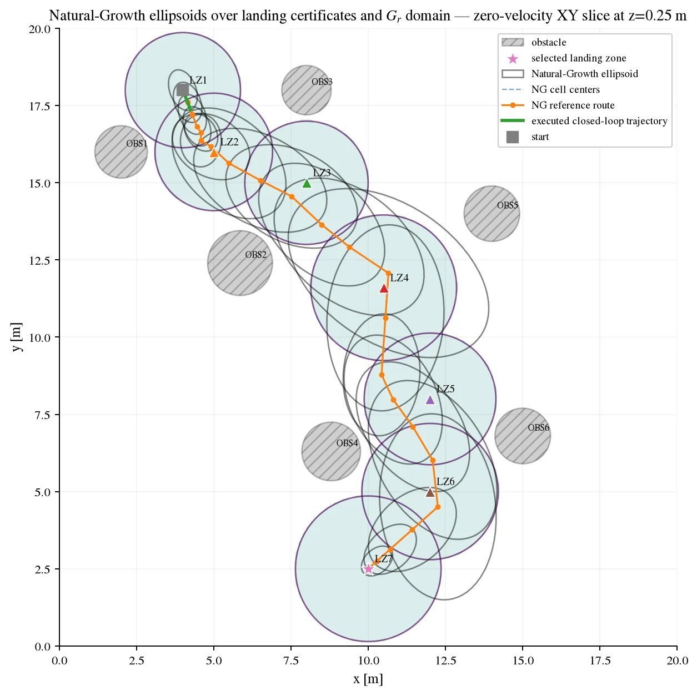
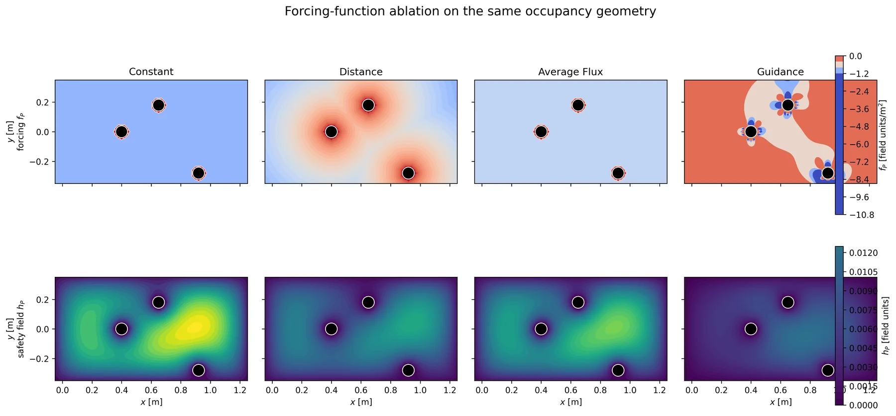
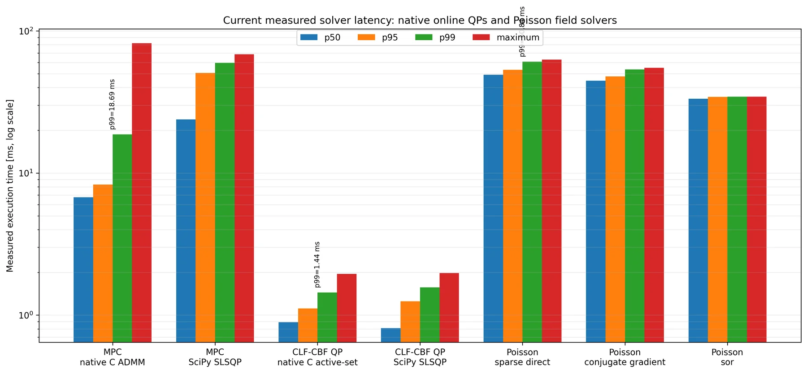
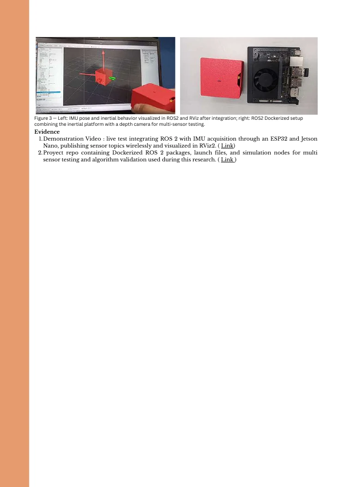
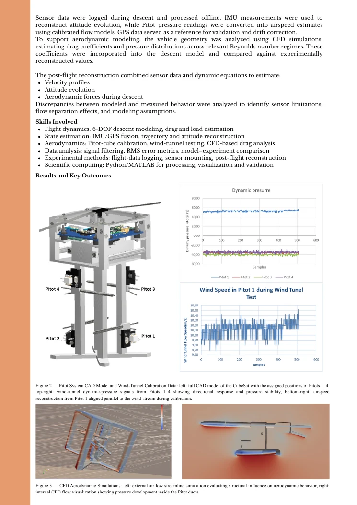
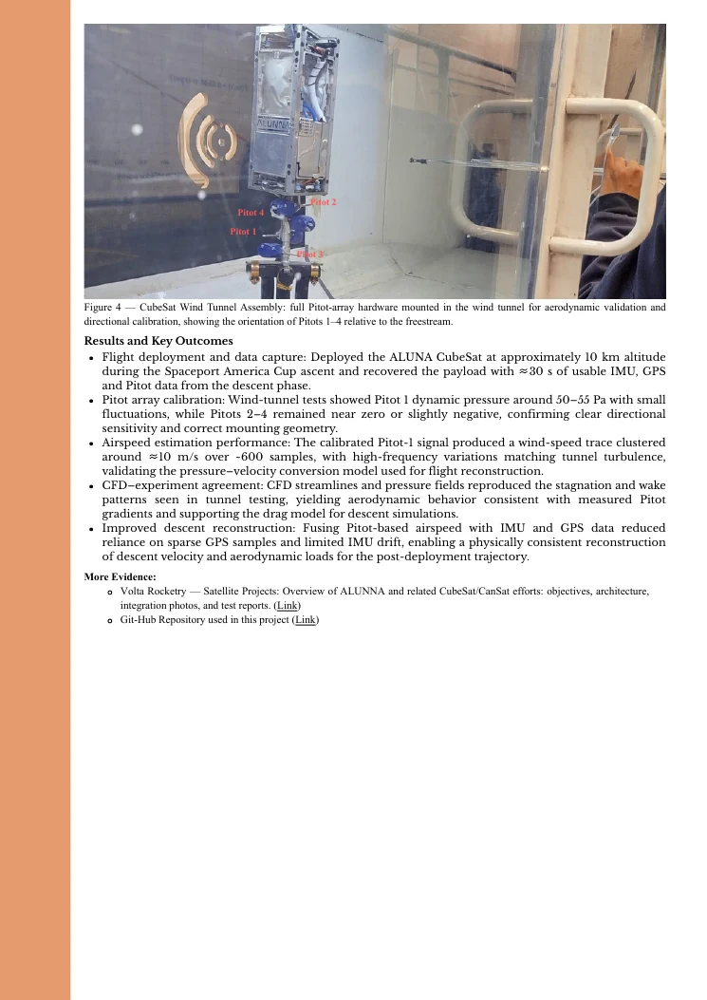

Caltech SURF — AMBER Lab
Open research record ↗
Each record combines the technical problem, theoretical basis, my contribution, measured outcomes, experimental evidence and the underlying reports or manuscripts.


I worked on two connected research threads. First, I contributed to ATMOS, a free-flying spacecraft testbed, supporting ROS 2/Gazebo/PX4 simulation, motion-tracking integration, IoT instrumentation and hardware-oriented validation workflows. Second, I developed and tested a reduced-order safety and contingency architecture for a Mars-analog helicopter landing problem with dynamic obstacles and changing landing-site availability.
Perception-derived obstacle geometry is converted into a smooth scalar safety field by solving a Dirichlet Poisson boundary-value problem. Gradients and Hessians of that field provide the derivatives required by CBF and high-order CBF constraints.
For a double-integrator landing model, the environmental HOCBF constrains acceleration for collision avoidance while a CLF drives the active landing task. The final control is obtained through an optimization-based safety filter that stays close to the nominal command.
Each landing zone receives a local Lyapunov certificate. An r-out-of-p combinatorial filter preserves a required number of viable landing alternatives while allowing safe target switching when the preferred site becomes unavailable.
To reach targets beyond a single local region of attraction, overlapping Lyapunov funnels are organized as a directed graph. Certified handoffs, finite-time transfer bounds and deadline-aware margins extend contingency preservation along routes around obstacles.
The framework was exercised in simulation and hardware-oriented experiments. The supplied benchmark set reports mean solver times of about 0.92 ms for the online CLF-CBF QP and 7.31 ms for the native condensed MPC, while complete Poisson-field pipelines required roughly 33–50 ms depending on solver. Formal theoretical validation of the complete chained-funnel framework remains ongoing, so the current claims are intentionally limited to the stated reduced-order models and certified sets.



SNaaS treats a coordinated UAV swarm as reconfigurable airborne communication infrastructure. The central challenge is that service behavior depends simultaneously on flight dynamics, relay topology, radio feasibility and fault recovery, which are usually separated across robotics and wireless simulators.
SWARMSYM models the swarm as a time-varying relay graph. A packet advances only when the active hop satisfies the configured range, SNR and capacity requirements, making link feasibility part of runtime execution rather than post-processing.
Isaac Sim provides embodied 3D execution; ROS 2 coordinates state, packets, events and topology; Sionna evaluates communication links; PX4/Pegasus can provide autopilot-accurate vehicle control; and Mission Control manages repeatable scenarios, commands and evidence.
The runtime recomputes feasible relay routes after UAV or link failures and can reconfigure topology while keeping the simulated scene, packet state and communication service synchronized.
The framework records service continuity, outage behavior, recovery, link metrics and topology evolution. My work also included analogous simulations and comparison against AirPAW datasets for communication-performance trends.


I developed a Dockerized ROS 2 sensing stack on Jetson hardware, integrating an ESP32-based inertial platform, Fast DDS networking, RViz visualization and field logging. The project moved from shared-network instability to a dedicated private network with tuned UDPv4/Fast DDS transport and repeatable low-latency experiments.
The system was extended with an Intel RealSense D405, Bluetooth and WebSocket transport, remote visualization, point-cloud generation and additional diagnostics. The architecture was organized as modular ROS 2 nodes so that future GNSS, EKF/UKF, VO/VIO and SLAM modules could be integrated without redesigning the underlying transport and sensing layer.
The supplied reports document EKF/UKF and VIO/SLAM readiness and formulation, not a completed production-grade visual-inertial SLAM deployment. The validated contribution is the sensing, timing, networking, orientation-fusion and reproducible ROS 2 infrastructure needed to support those higher-level estimators.

The project combined a 6-DOF descent model with IMU, GPS and a multi-Pitot pressure array to reconstruct velocity, attitude and aerodynamic behavior during atmospheric descent. CFD and wind-tunnel calibration were used to connect the pressure measurements to the physical model.
Descent-dynamics modeling, sensor integration, Pitot-array design/calibration, CFD comparison and physically consistent post-flight reconstruction using IMU/GPS/Pitot measurements.

